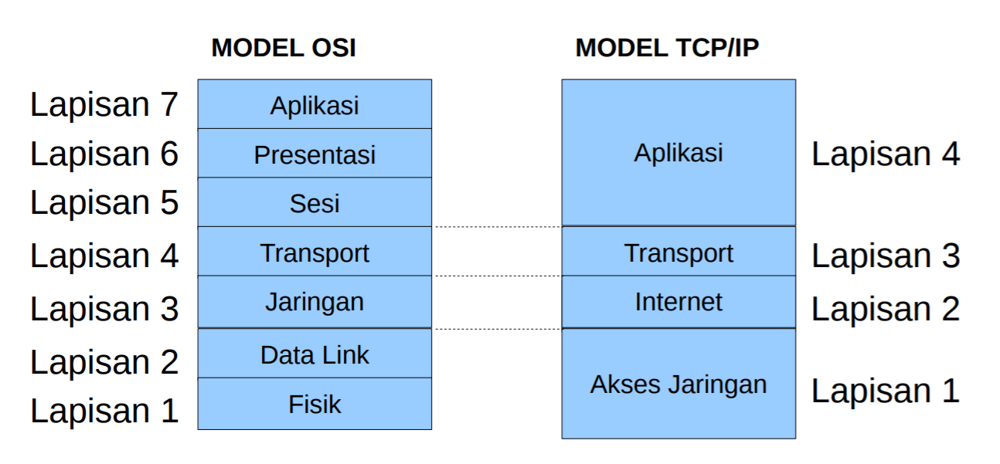
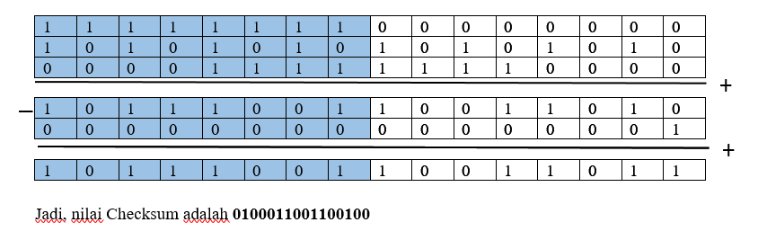
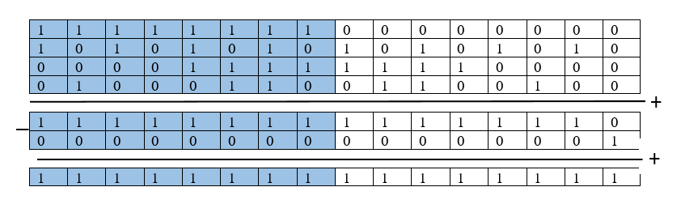

Jaringan Komputer
User Datagram Protokol
Model Referensi TCP/IP
TCP/IP Layer atau disebut dengan Transmission Control Protocol/Internet Protocol layer merupakan model komunikasi data yang dikempangkan oleh US Department of Defense (DoD) yang merepresentasikan komunikasi data antar peralatan jaringan dan antar jaringan. Protokol internet pertama kali dirancang pada tahun 1980-an. Akan tetapi di tahun 1990-an dimana internet semakin populer dan host yang semakin banyak, mulai bemunculan protokol yang hanya bisa digunakan oleh kalangan tertentu, atau protokol yang dibuat oleh pabrik tertentu yang belum tentu kompatibel dengan protokol lain dari pabrik yang lain pula. Sehingga pada akhirnya badan International Standart Organization (ISO) membuat standarisasi protokol yang saat ini dikenal dengan protokol model Open System Interconnection atau disingkat OSI. Model OSI ini manjadi referensi dan konsep dasar teori tentang cara kerja sebuah protokol.
Dalam perkembangannya TCP/IP digunakan sebagai standart de facto. Arsitektur TCP/IP tidaklah berbasis model referensi tujuh lapis OSI, tetapi menggunakan model referensi DARPA. TCP/IP mengimplemenasikan arsitektur berlapis yang terdiri atas empat lapis. Empat lapis ini, dapat dipetakan (meski tidak secara langsung) terhadap model referensi OSI. Empat lapis ini, kadang-kadang disebut sebagai DARPA Model, Internet Model, atau DoD Model, mengingat TCP/IP merupakan protokol yang awalnya dikembangkan dari proyek ARPANET yang dimulai oleh Departemen Pertahanan Amerika Serikat.
Macam-Macam Layer TCP/IP
- Application Layer
-
Berperan sebagai high-level protocol yang melakukan proses representasi, encoding dan dialog control data. Juga menyediakan servis-servis terhadap software-software yang berjalan pada komputer. Tugas application layer disini adalah untuk mendefinisikan bagaimana sebuah browser bisa mengambil konten dari sebuah web server hingga akhirnya tampil di web browser. Protokol-protokol yang beroperasi pada Application Layer:
- Domain Name Service Protocol (DNS) Menerjemahkan nama host menjadi alamat IP.
- Hypertext -Transfer Protocol (HTTP) digunakan untuk mentransfer file Web dari World Wide Web.
- Simple Mail Transfer Protocol (SMTP) digunakan untuk mentransfer pesan email.
- Telnet, a terminal emulation protocol, digunakan untuk mengakses server atau peralatan jaringan jarak jauh
- File Transfer Protocol (FTP) Digunakan untuk transfer file secara interaktif antar sistem
- Transport
- Transport layer di TCP/IP disebut juga sebagai Host-to-Host, fungsinya untuk membangun koneksi antar host. Misal antara komputer satu dengan yang lain, client dengan server. Transport Layer berfungsi menyediakan servis yang akan digunakan oleh Application Layer. Mempunyai 2 protokol utama yaitu TCP dan UDP. Pada Layer ini data diubah menjadi suatu paket data dan menentukan metode pengiriman, flow control dan error correction terhadap paket data.
- Internet
- Berperan untuk memberikan informasi alamat asal dan tujuan dari paket data dan menentukan jalur atau rute (routing) pengiriman paket data. Internet Protocol mendefinisikan 2 hal di IP Address yaitu Network Address ( wilayahnya ) dan Host Address ( Alamat Spesifiiknya ).
- Network Acces
- Layer ini sering juga disebut sebagai host-to-network Layer. Layer menangani semua komponen dan proses yang berkaitan dengan physical link, baik secara fisik maupun logical. Informasi mengenai Teknologi Jaringan yang digunakan juga ditentukan pada Layer ini. Pada layer ini terdapat protokol-protokol seperti ethernet pada LAN, PPP pada WAN, dan juga Frame Relay.
Mengapa Model Referensi dibuat berlayer
- Setiap lapisan memiliki fungsi dan proses yang berbeda
- Membantu dalam perancangan protokol
- Membantu dalam pengembangan
- Mencegah perubahan kemampuan atau teknologi akibat perubahan lapisan di bawah atau atasnya
- Menyediakan satu bahasa untuk mendeskripsikan fungsi jaringan dan kemampuannya.
Fungsi Layer Transport
- Menerima data dari session layer
- Fungsi pertama dari transport layer ini adalah menerima data yang dikirimkan melalui session layer. Seperti kita ketahui, bahwa keseluruhan model OSI ini merupakan satu kesatuan, sehingga setiap kegiatan yang berjalan di dalam Model Referensi OSI ini adalah berkesinambungan. Begitu pula dengan proses transmisi data. Data yang sdah melewati layer session, kemudian diteruskan ke transport layer, untuk kemudian diteruskan lagi menuju layer-layer berikutnya.
- Memecah data menjadi bagian-bagian yang lebih kecil
- Disinilah fungsi utama lainnya dari transport layer. Ya, transport layer memiliki fungsi utama untuk memecah data atau peket data ke dalam bentuk-bentuk paket yang lebih kecil. Proses ini dilakukan untuk mempermudah proses pengiriman alias transmisi data yang berjalan di dalam jaringan komputer tersebut. Dengan adanya proses pemecahan data ini, maka setiap data diyakini tidak akan mengalami corrupt , atau mengalami proses trasnmisi yang sangat lamabt akibat besarnya ukuran data yang ada.
- Meneruskan data ke network layer
- Netwok layer jaringan komputer merupakan salah satu lapisan yang bertugas untuk memberikan header pada paket data yang sudah dipecah. Nah, ketika paket data tersebut sudah dipecah-pecah di dalam transport layer, maka kemudian paket data tersebut akan diteruskan ke dalam network layer, untuk kemudian diproses dan diberikan header atau judul pada setiap paket data yang ditransmisikan.
- Memastikan bahwa semua data yang melewatinya dapat tiba di sisi lainnya dengan tepat
- Fungsi berikutnya dari transport layer adalah fungsi supervise atau pengawasan. Transport layer memiliki fungsi yang sangat penting, karena transport layer berfungsi untuk memastikan bahwa seluruh paket data yang ditransmisikan di dalam jaringan komputer tersebut dapat sampai pada komputer penerima dengan cepat, tepat, dan sesuai dengan tujuan. Hal ini untuk menghindari terjadinya kesalahan dalam proses transmisi data di dalam jaringan komputer.
- Mengirim segment dari satu host ke host yang lain
- Fungsi berikutnya dari transport layer adalah melakukan proses pengiriman segment dari satu host menuju host yang lain. segment sendiri merupakan bagian dari pecahan-pecahan data yang sudah diproses di dalam transport layer. Dengan begitu, setiap pecahan data tersebut nantinya akan diterima di host lain.
- Memastikan rehabilitas data
- Reliabilitas merupakan sebuah kondisi dimana sebuah data adalah benar adanya, dan beisi sesuai dengan spesifikasinya. Tugas dar transport layer adalah memastikan hal tesebut. Jadi, transport layer nantinya akan mengecek, apakah data yang diolah dan juga diproses di dalam transport layer sudah sesuai dan sudah reliabel.
Apabila hal ini sudah selesai, maka transport layer kemudian akan mengirimkan pecahan atau pakt data tersebut menuju layer berikutnya untuk diproses lebih lanjut. Hal ini dilakukan untuk menjaga agar konektivitas di dalam jaringan ttap berjalan dengan baik. - Mengatur lalu lintas dari sebuah jaringan
- Fungsi lainnya dari transport layer yang tidak kalah penting adalah fungsinya sebagai polisi lalu lintas. Ya, transport layer merupakan lapisan yang berfungsi untuk mengatur lalu lintas kecepatan data yang ditransmisikan melalui jaringan komputer tersebut. Hal ini dilakukan agar setiap perputaran dan traffic dapat berjalan dan ditransmisikan dengan lancar, dan juga diaplikasikan untuk mencegah terjadinya kemacetan apabila jaringan sedang berada pada kondisi yang sangat padat dan berpotensi mengalami kemacetan jaringan.
Penjelasan Port Number, fungsi dan contoh proses kerjanya
Port adalah soket atau jack koneksi yang terletak di luar unit sistem sebagai tempat kabel-kabel yang berbeda ditancapkan. Setiap port pasti berbeda fungsi dan bentuk fisiknya. Port-port tersebut adalah port serial, port paralel, port SCSI (dibaca “scuzzy”), port USB. Nomor port adalah bilangan bulat unsigned 16-bit yang berkisar dari 0 hingga 65535. Dalam klasifikasinya, port terbagi menjadi dua bagian yaitu:
- Physical Port adalah port jaringan fisik yang memungkinkan kabel untuk dihubungkan ke komputer, router, modem dan perangkat periferal lainnya. Beberapa jenis port fisik tersedia pada perangkat keras jaringan komputer. Port fisik, merupakan lawan dari port virtual atau logic adalah salah satu interface di komputer, yaitu tempat Anda dapat memasukkan konektor untuk perangkat. Contoh Port Fisik: Port RJ45 (Port Ethernet / LAN / NIC), Port Serial (RS-232), Port USB.
- Logical Port adalah Port yang digunakan untuk operasi layanan sistem file, dibuat berdasarkan port Ethernet, port bond, atau VLAN. Secara mudahnya, port logic ini berarti tidak terlihat secara fisik namun tetap diakui keberadaannya layaknya sebuah software pada komputer. Contoh dari port logic adalah port yang sering Anda ketahui saat ini, yaitu port 22 (SSH), 443 (HTTPS), 53 (DNS) dll.
Fungsi Port
- Port serial digunakan untuk mentransmisikan data dari jarak jauh secara lambat, seperti keyboard, mouse, monitor, dan modem dial-up.
- Port paralel untuk mentransmisikan data pada jarak yang pendek secara Port ini sering dipakai untuk menghubungkan printer, disk eksternal, atau tape magnetik untuk bacup.
- Port SCSI (small computer system interface), untuk mentransmisikan data secara cepat bahkan dapat dipakai untuk 7 alat sekaligus atau “daisy chain“. Contoh daisy chain : dari SCSI kontroller kemudian disambungkan ke perangkat hardisk drive eksternal, dari HDD eksternal disambungkan secara seri ke perangkat yang lain seperti tape drive, kemudian dari tape drive tsb bisa juga disambungkan ke CD/DVD drive dan seterusnya.
- Port USB (universal serial bus), untuk mentransmisikan data hingga 127 periferal dalam rangkaian daisy chain.
- Port tambahan khusus seperti : FireWire, MIDI, IrDa, Bluetooth, dan ethernet. Fire Wire berfungsi untuk camcorder, pemutar DVD, dan TV. Sedangkan port MIDI (musical instrument digital interface) untuk menghubungkan instrumen musik. Kemudian port IrDA (Infrared Data Association) untuk koneksi nirkabel sejauh beberapa kaki. Port Bluetooth adalah gelombang radio jarak pendek yang bisa menstransmisikan sejauh 9 m.
- Port ethernet adalah untuk LAN.
Berdasarkan penomorannya, port UDP dan TCP dibagi menjadi tiga jenis:
- Well-know Port (0-1023) port yang dikenali atau port sistem
- Registered Port (1024-49151) port terdaftar yang ditugaskan oleh IANA ke layanan yang lebih spesifik setelah adanya request entity pada sebuah aplikasi.
- Dynamically Assigned Port (49152 - 65535) port dinamis (pribadi) berkisar dari 49.152 hingga 65.535. Dapat digunakan oleh layanan pribadi atau layanan khusus, sehingga Anda bisa memodifikasi fungsi dari port-nya.
Daftar Port yang sering digunakan dalam Jaringan Komputer
- 1. Port 20 & 21 (FTP)
- FTP adalah singkatan dari “File Transfer Protocol”. Tujuan FTP adalah untuk mentransfer file melalui internet. Hal ini pada dasarnya menetapkan semua aturan yang harus diikuti selama transfer data. Namun, karena masalah keamanan, FTP juga meminta otentikasi kepada pengguna sebelum melakukan transfer data. Port 20 berfungsi untuk untuk meneruskan dan mentransfer data. Port ini mengambil alih tugas mentransfer data FTP saat berada dalam mode aktif. Port 21 berfungsi untuk pensinyalan untuk FTP. Hal ini menjalankan semua perintah dan memiliki kontrol aliran untuk data, yang berarti port 21 ini lebih leluasa dalam mentransfer data karena memiliki kontrol penuh dibandingkan port 20.
- 2. Port 22 (SSH)
- SSH juga disebut sebagai “Secure Shell”. Port ini berfungsi untuk melakukan tugas yang bisa diakses dari jarak jauh, contohnya seperti menghubungkan ke server atau host. Hal ini juga memungkinkan Anda untuk menjalankan sejumlah perintah dan memindahkan file Anda dari jarak jauh juga.
Port ini mengirimkan data melalui jaringan dalam bentuk terenkripsi, selain itu, hanya orang yang memiliki akses yang dapat login dari jarak jauh ke sistem yang dituju menggunakan Port 22 untuk memastikan bahwa tidak ada informasi yang masuk ke tangan yang tidak sah. Port ini beroperasi pada Application Layer (OSI Layer ke 7) Model TCP / IP dan dianggap sebagai salah satu port paling aman dan dapat diandalkan untuk mengakses file dari jarak jauh.
- 3. Port 23 (TELNET)
- Port 23 (TELNET) berfungsi untuk membuat koneksi antara server dan komputer jarak jauh. Fungsi sebenarnya masih sama saja seperti SSH, hanya yang membedakan adalah dalam hal keamanan. Hal ini disebabkan karena port 23 tidak menggunakan enkripsi dalam koneksinya, sehingga menyebabkan telnet menjadi salah satu layanan yang kurang aman untuk digunakan.
- 4. Port 25 (SMTP)
- SMTP merupakan singkatan dari Simple Mail Transfer Protocol. Fungsi port 25 adalah untuk memastikan bahwa pesan email dikomunikasikan melalui jaringan dengan aman. Port ini masih berada pada Application Layer (OSI Layer ke 7). Protokol ini tidak hanya melakukan tugas pengiriman pesan dalam jaringan saja, nmaun dapat mengirimkan pesan di antara berbagai jaringan yang lain. Hal Ini menjadikannya sebagai salah satu port terpenting untuk komunikasi pesan melalui jaringan karena keamanannya. Namun, Anda tidak memiliki hak untuk mengunduh email agar bisa membacanya, karena ini hanyalah bertujuan untuk mentransfernya melalui jaringan.
- 5. Port 2525 (SMTP Alternative)
- Port 2525 masih memiliki fungsi yang sama seperti port 25, yaitu untuk mengirimkan pesan e-mail dalam jaringan secara aman. Adapun port ini digunakan sebagai port alternatif selain port 25.
- 6. Port 53 (DNS)
- DNS disebut juga sebagai “Domain Name System”, berfungsi untuk menerjemahkan alamat IP pada setiap host yang tadinya berupa angka menjadi huruf. Jika Anda mengunjungi sebuah situs web dengan sebuah nama, misalnya Facebool.com sebenarnya dibalik nama tersebut memiliki alamat IP. Hanya saja jika kita menggunakan alamat IP, maka itu cukup merumitkan. Oleh karena itu, ilmuwan komputer memiliki ide untuk mengganti alamat IP menjadi huruf agar lebih mudah dikenali dan diingat.
- Port 67&68 (DHCP)
- DHCP juga dikenal sebagai “Dynamic Host Configuration Protocol”, port ini berjalan pada protokol UDP. Port 67 dan 68 berfungsi untuk menetapkan informasi terkait Alamat IP ke klien di jaringan secara otomatis. Informasi ini dapat terdiri dari subnet mask, Alamat IP dll. Port UDP 67 melakukan tugas menerima permintaan alamat dari DHCP dan mengirim data ke server. Di sisi lain, UDP Port 68 melakukan tugas menanggapi semua permintaan DHCP dan meneruskan data ke klien.
- 8. Port 80 (HTTP/Webserver)
- HTTP adalah singkatan dari Hypertext Transfer Protocol. Fungsi port 80 adalah memungkinkan peramban / browser terhubung ke halaman web di internet. Port 80 pada dasarnya menunggu klien web untuk meminta koneksi. Setelah koneksi berhasil dibuat, Anda akan terhubung ke World Wide Web (WWW) dan mendapatkan akses ke berbagai halaman web di internet. Adapun port alternatif dari http / webserver adalah port 8080 dan 81.
- 9. Port 443 (HTTPS)
- Port HTTPS 443 berfungsi untuk menghubungkan Anda ke internet dengan membuat koneksi antara halaman web dan browser yang terhubung ke World Wide Web (WWW). Namun, port ini memiliki fitur keamanan tambahan, yang tidak dimiliki port HTTP 80. Port ini dibuat untuk membuat koneksi yang lebih terjaga untuk memastikan bahwa data ditransmisikan melalui jaringan yang aman. Port Ini pada dasarnya mengenkripsi dan mengotentikasi paket jaringan sebelum mentransfernya melalui jaringan untuk meningkatkan keamanan. Fitur keamanan ini diperkenalkan oleh penggunaan SSL, yang juga bisa disebut sebagai Secure Socket Layer.
- 10. Port 110 (POP-3)
- POP3 juga disebut sebagai Post Office Protocol Version 3 yang beroperasi pada port 110 dari Protokol TCP. Port 110 ini memungkinkan pesan email untuk diambil dari server SMTP. Menggunakan port ini, Anda dapat mengunduh pesan dari server dan kemudian membacanya. Selain itu, pesan juga akan dihapus dari server setelah diunduh. Namun, port ini memiliki masalah keamanan. Otentikasi yang ditransfer melalui jaringan tidak dienkripsi dan dikirim dalam teks biasa. Hal Ini memungkinkan para hacker dapat dengan mudah mendapatkan informasi di dalamnya dan menyalahgunakan informasi tersebut.
- 11. Port 119 (NNTP Server)
- NNTP Server atau dikenal dengan Network News Tranfer Protocol menggunakan port 119. Port ini berfungsi untuk menampung server-server dari dunia USENET newsgroup (berita).
- 12. Port 143 (IMAP)
- IMAP adalah singkatan dari “Internet Message Access Protocol”. Port IMAP -143 berfungsi untuk mengambil email dari server jauh tanpa harus mengunduh email. Berarti Anda memiliki kebebasan untuk mengakses email dari mana saja dengan asalkan terhubung dengan server. Namun, Anda juga dapat mengunduh e-mail jika mau. Hal Ini juga memberi Anda kemudahan untuk mencari pesan-pesan Anda dari banyaknya pesan yang ada. Selain itu, port ini juga memastikan bahwa data tetap aman selama koneksi berlangsung.
- 13. Port 389 (LDAP)
- LDAP merupakan singkatan dari “Lightweight Directory Access Protocol” menggunakan port 389. Port 389 berfungsi untuk menangani permintaan otentikasi dari komputer klien yang bertujuan untuk memberikan akses terhadap direktori, telepon, alamat dll.
- 14. Port 3389 (RDP)
- TCP Port 3389 digunakan untuk Windows Remote Desktop Protocol (RDP) dan kadang-kadang juga digunakan oleh Windows Terminal Server. Port ini seringkali digunakan para hacker untuk melakukan serangan Distributed Denial of Service Attack atau lebih dikenal dengan sebutan DDOS.
- 15. Port 445 (SMB)
- Port 445 digunakan untuk Server Message Block (SMB). SMB melayani berbagi File dan Printer Windows (file sharing). Pada Windows 2000, Microsoft telah menciptakan transportasi baru untuk SMB melalui TCP dan UDP pada port 445, yang menggantikan implementasi yang lebih lama yaitu di atas port 137, 138, 139.
- 16. Port 1503 & 1720
- Port 1503 dan 1720 digunakan oleh aplikasi kolaboratif multimedia seperti NetMeeting untuk membangun dan mengontrol sesi kolaboratif. Selain itu, contohnya adalah VOIP (Voice Over Internet Protocol) yang berfungsi untuk melakukan panggilan melalui internet seperti Voice Call di WhatsApp.
- 17. Port 3360 (MySQL)
- Port 3306 adalah port default untuk Protokol MySQL, yang digunakan oleh klien mysql, MySQL Connector, dan utility seperti mysqldump dan mysqlpump. Port 33060 adalah port default untuk Database Extended Interface (Protokol MySQL X).
- 18. Port 5631
- Port 5631 adalah port default pada jaringan komputer yang berfungsi untuk mengkoneksikan jaringan komputer dengan pcAnywhere. pcAnywhere adalah aplikasi yang dibuat oleh perusahaan jaringan yang bernama Symantec untuk menyediakan fungsionalitas kendali jarak jauh. Tidak berbeda jauh dengan SSH dan telnet hanya saja pcAnywhere ini berbentuk grafis / GUI.
- 19. Port 5900 (VNC)
- VNC adalah singkatan dari “Virtual Network Computing” menggunakan port 5900 dalam layanannya. Port ini berfungsi untuk menjalankan aplikasi sharing desktop dan platform remote control yang independen. VNC sangat populer dan juga digunakan untuk dukungan jarak jauh di banyak organisasi besar. Cara kerjanya tidak berbeda jauh dengan pc anywhere.
- 20. Port 8080 & 3128
- Selain HTTP, Proxy juga menggunakan port yang sama dengan HTTP karena masih berjalan pada layanan yang sama hanya saja memiliki fungsi berbeda. Selain port 8080, ada juga port alternatif untuk proxy yaitu port 3128.
Penjelasan tentang UDP dan prinsip kerjanya
User Datagram Protocol (UDP) merupakan salah satu jenis protokol internet. Melalui UDP, sebuah aplikasi komputer dimungkinkan untuk mengirim pesan kepada komputer lain di sebuah jaringan tanpa perlu melalui proses komunikasi awal.
UDP memiliki karakteristik utama berupa “connectionless”, artinya, pesan yang dikirimkan melalui UDP bisa sampai tanpa memerlukan proses negosiasi koneksi antara dua komputer host yang ingin bertukar info. Selain itu, karakteristik UDP lainnya adalah “unreliable”, artinya semua pesan yang dikirimkan tidak memiliki nomor urut atau pesan pemberitahuan. Jika selama transmisi ada pesan-pesan yang hilang, maka protokol aplikasi yang letaknya di atas UDP harus memulihkan pesan tersebut.
Fungsi UDP
- Cocok untuk mengirimkan informasi yang membutuhkan kecepatan daripada kehandalan, seperti misalnya video atau audio
- Salah satu protokol yang “ringan”, artinya mampu secara efektif memakai sumber daya profesor dan memori, bahkan menghematnya. Jika sebuah protokol dapat dikatakan ringan, maka protokol tersebut dapat melaksanakan fungsi spesifik dengan saling bertukar pesan, seperti misalnya query nama dalam DNS.
- UDP mengimplementasikan layanan keandalan, artinya protokol ini memfasilitasi layanan pertukaran data dengan andal, seperti misalnya yang ditemukan pada TFTP (Trivial File Transfer Protocol), dan NFS
- Tidak membutuhkan keandalan, misalnya saja pada bagian Routing Information Protocol (RIP).
- Dapat melakukan transmisi broadcast, sebab tak perlu adanya koneksi terlebih dahulu dengan host yang spesifik. Sebuah paket data dapat dikirimkan dengan beberapa tujuan yang dialamatkan pada multicast atau broadcast.
Perbedaan UDP dan TCP
Transmission Control Protocol (TCP) sendiri sebetulnya juga merupakan salah satu protokol layaknya UDP yang juga memfasilitasi beberapa komputer agar dapat saling berkomunikasi dan bertukar data dalam jaringan. UDP dapat dikatakan sebagai salah satu protokol lapisan transport TCP/IP yang mendukung komunikasi unreliable (tidak handal), artinya tidak dibutuhkan koneksi antara komputer host dalam jaringan.
UDP sendiri adalah kebalikan dari transport layer TCP. Dengan adanya UDP, pengguna dapat mengirimkan paket-paket melalui aplikasi socket yang berupa datagram. Terdapat dua jenis koneksi, yaitu reliable (handal) dan unreliable (tak handal). Bedanya, jika koneksi reliable akan memberikan konfirmasi saat proses pengiriman data gagal, koneksi unreliable tak akan memberi notifikasi bahwa sebuah data gagal dikirimkan. Secara umum, perbedaan antara UDP dan TCP dapat dijabarkan dalam beberapa poin berikut :
- Contoh Aplikasi: Beberapa contoh aplikasi yang menggunakan protokol TCP antara lain TELNET, FTP (File Transfer Protocol), dan SMTP (Simple Mail Transfer Protocol). Sementara itu, beberapa contoh aplikasi yang menggunakan UDP antara lain : DNS (Domain Name System), SNMP (Simple Network Management Protocol), TFTP dan SunRPC.
- Karakteristik: TCP merupakan sebuah protokol yang memiliki karakteristik berbasis koneksi (connection oriented), sementara UDP tidak berbasis koneksi (connectionless).
- Pengiriman Data: TCP memakai jalur data full duplex, artinya antara jalur masuk dan jalur keluar data terpisah menjadi dua buah jalur, sehingga proses pengiriman dan penerimaan dapat dilakukan secara simultan. Sementara itu, UDP mengirimkan data dalam bentuk paket (datagram), tanpa adanya nomor identifier. Artinya, besar kemungkinan data yang didapat tidak urut dan bisa jadi mengalami kerusakan atau bahkan hilang selama proses pengiriman dari host asal ke tujuan.
- Port: TCP menggunakan port yang mengadopsi 16-bit integer (di antara 0-65535), yang antara port satu dan port lainnya harus unik (berbeda). Sementara itu,UDP pun menggunakan porti 16-bit integer pula, namun dibagi-bagi menjadi 3 bagian, yatu port 1-1023 untuk well-known port, port 1024-49151 untuk registered port, dan sisanya untuk ephemeral port di nomor 49152-65535.
- Komunikasi: TCP memingkinkan beberapa komputer berbeda saling berkomunikasi dan bertukar data. Sementara UDP sendiri kurang begitu handal untuk memfasilitasi komunikasi tanpa koneksi antara beberapa komputer host dalam jaringan TCP/IP.
Cara Kerja UDP
Seperti juga pada kasus TCP,UDP pun memiliki sebuah saluran (channel) yang berguna untuk menghubungkan host antar host untuk saling berkirim informasi. Channel ini kemudian disebut dengan port UDP. Agar dapat terhubung dengan protokol UDP, aplikasi pada komputer terlebih dahulu perlu menyediakan alamat IP serta nomor port UDP dari host yang ingin dituju.
Port UDP ini berguna sebagai sebuah multiplexed message queue. Artinya, port UDP tersebut kemudian mampu bekerja dengan menerima beberapa pesan secara bersamaan. Setiap port UDP memiliki identifikasi dengan nomor yang unik, namun memiliki pembagian tersendiri seperti yang telah dijelaskan sebelumnya.
Walaupun cukup bermanfaat, namun UDP sendiri memiliki beberapa kelemahan dalam cara kerjanya. Misalnya saja, UDP tidak memfasilitasi mekanisme buffering data masuk dan keluar. Selain itu, UDP juga tak memfasilitasi segmentasi data yang ukurannya besar untuk disederhanakan ke dalam segmen-segmen data, yang bisa dilakukan dengan TCP. Dalam protokol UDP juga tidak terdapat mekanisme flow-control seperti layaknya TCP.
Tentunya antara UDP dan TCP saling terkait dalam hal jaringan komputer, yang membuatnya sebagai protokol bermanfaat yang dapat membantu pengguna saling berkomunikasi dan berkirim data.
Prinsip kerja Checksum Checking dan contohnya
Pada dasarnya komunikasi data merupakan proses pengiriman data yang terjadi dari dua atau lebih device yang terhubung dalam sebuah jaringan, baik local maupun global seperti internet. Namun dalam sebuah proses pengiriman, tidak dipungkiri dapat terjadi kesalahan berupa ketidak sesuaian data yang dikirim dan diterima atau bahkan dapat terjadi kegagalan dalam pengiriman. Sehingga dibutuhkan Error Detection dan Error Corection.Checksum adalah skema kesalahan-deteksi sederhana di mana setiap pesan yang dikirim yang menghasilkan nilai numeric berdasarkan byte dalam pesan.
Prinsip kerja checksum
Proses pengecekan metode checksum dapat dilakukan dengan membandingkan checksum yang telah sampai pada receiver dengan checksum data yang dikirimkan. Apabila terjadi perbedaan nilai pada perbandingan ini, maka terjadi kesalahan atau error dalam pengiriman data. Pada dasarnya metode ini mirip dengan parity check, perbedaannya adalah jumlah bit pada checksum lebih besar dan hasil dari penjumlahan data degan checksum harus selalu dibuat nol. (1's complement)
Langkah-langkah Perhitungan Checksum
Di sisi pengirim
- Unit data dibagi ke dalam k seksi yang masing-masing seksi berisi n-bit data.
- Semua seksi data tersebut ditambahkan menggunakan 1’s complement untuk mendapatkan jumlahnya.
- Jumlah tersebut kemudian dikomplemenkan dan menjadi nilai checksum.
- Checksum dikirim bersama dengan data sebagai unit terakhir dalam paket pengiriman.
Misalnya Bit Data yang di kirim 1111111100000000 1010101010101010 0000111111110000, maka perhitungan di sisi pengirim:
Maka bentuk data yang dikirim 1111111100000000 1010101010101010 0000111111110000 0100011001100100
Di sisi penerima
- Unit data yang diterima kembali dibagi ke dalam k seksi yang masing-masing seksi berisi b-bit data.
- Semua seksi unit data tersebut dijumlahkan menggunakan 1’s complement untuk mendapatkan jumlahnya.
- Jumlah tersebut kemudian dikomplemenkan.
- Jika hasilnya adalah nol, maka data diterima; jika tidak, data akan ditolak.
Penerima menerima data 1111111100000000 1010101010101010 0000111111110000 0100011001100100, maka perhitungan di sisi penerima:
Complementnya 0000000000000000 berarti data tidak eror

- Andi Widad Sucitra
- D121191013
- sucitraandiwidad@gmail.com